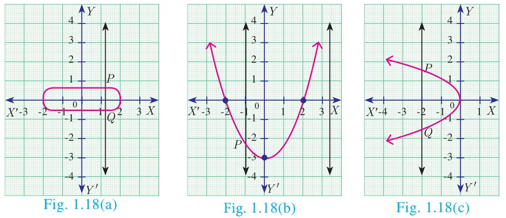
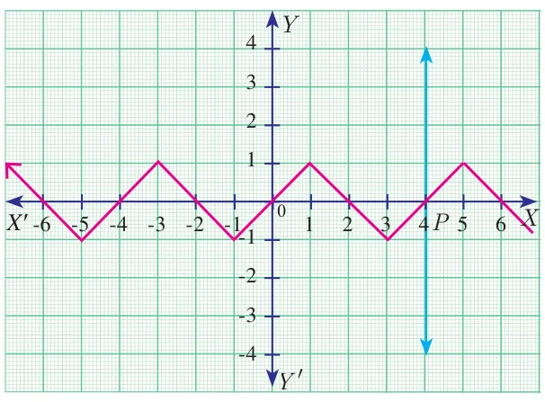
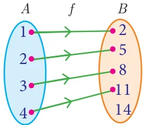
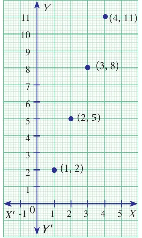

A function may be represented by
(a) a set of ordered pairs (b) a table form (c) an arrow diagram (d) a graphical form
Let \(f : A \to B\) be a function
- Set of ordered pairs
The set \(f = \{(x, y) \mid y = f(x), x \in A\}\) of all ordered pairs represent a function.
- Table form
The values of \(x\) and the values of their respective images under \(f\) can be given in the form of a table.
- Arrow diagram
An arrow diagram indicates the elements of the domain of \(f\) and their respective images by means of arrows.
- Graph
The ordered pairs in the collection \(f = \{(x, y) \mid y = f(x), x \in A\}\) are plotted as points in the \(XY\)-plane. The graph of \(f\) is the totality of all such points.
Every function can be represented by a curve in a graph. But not every curve drawn in a graph will represent a function.
The following test will help us in determining whether a given curve is a function or not.
1.6.1 Vertical line test
A curve drawn in a graph represents a function, if every vertical line intersects the curve at only one point.
Example 1.10
Using vertical line test, determine which of the following curves (Fig. 1.18(a), 1.18(b), 1.18(c), 1.18(d)) represent a function?


Solution
The curves in Fig. 1.18 \((a)\) and Fig. 1.18 \((c)\) do not represent a function as the vertical lines meet the curves in two points \(P\) and \(Q\).
The curves in Fig. 1.18 (b) and Fig. 1.18 (d) represent a function as the vertical lines meet the curve in at most one point.
Note
Any equation represented in a graph is usually called a curve.
Example 1.11
Let \(A = \{1,2,3,4\}\) and \(B = \{2,5,8,11,14\}\) be two sets. Let \(f : A \to B\) be a function given by \(f(x) = 3x - 1\). Represent this function
(i) by arrow diagram (ii) in a table form (iii) as a set of ordered pairs (iv) in a graphical form
Solution
\(A = \{1,2,3,4\};\ B = \{2,5,8,11,14\};\ f(x) = 3x - 1\)
\(f(1) = 3(1) - 1 = 3 - 1 = 2;\quad f(2) = 3(2) - 1 = 6 - 1 = 5\)
\(f(3) = 3(3) - 1 = 9 - 1 = 8;\quad f(4) = 4(3) - 1 = 12 - 1 = 11\)
- Arrow diagram

Fig. 1.19 Let us represent the function \(f : A \to B\) by an arrow diagram (Fig. 1.19).
- Table form
The given function \(f\) can be represented in a tabular form as given below
\(x\) 1 2 3 4 \(f(x)\) 2 5 8 11 - Set of ordered pairs
The function \(f\) can be represented as a set of ordered pairs as
\(f = \{(1,2), (2,5), (3,8), (4,11)\}\)
- Graphical form

Fig. 1.20 In the adjacent \(XY\)-plane the points (1,2), (2,5), (3,8), (4,11) are plotted (Fig. 1.20).